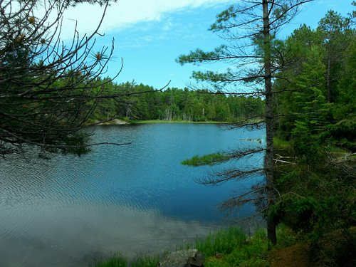
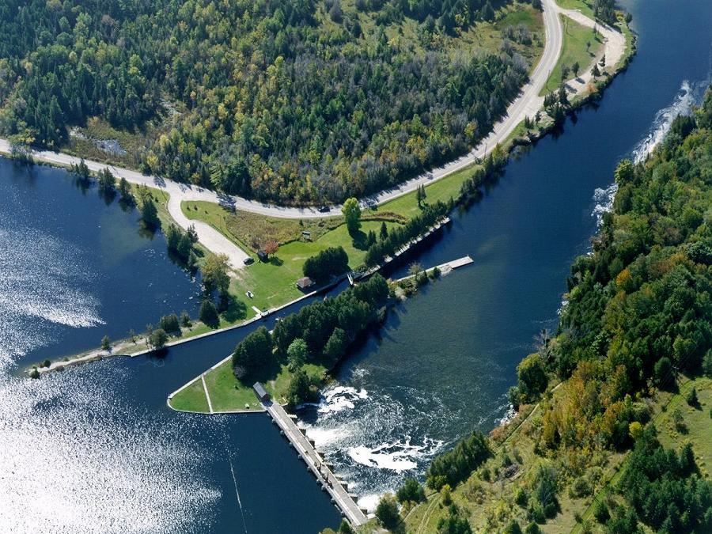

IntroductionThe International Environmetrics Society (TIES), the Canadian Environmental Modelling Centre, and the Trent School of the Environment are co-organizing the 2023 TIES Regional Meeting, which will take place from 24 July to 29 July, 2023, just after the 64th World Statistics Congress (WSC64, 16-20 July in Ottawa, Canada); just after the 6th Spatial Statistics Conference (18-21 July in Boulder, Colorado) and one week before the 2023 Joint Statistical Meetings (JSM2023), 5-10 Aug in Toronto, Canada. The conference will be offered in a hybrid format to welcome both online delegates and those participating in-person in Peterborough, Ontario, Canada (90 minutes from Toronto and 2.5 hours from Ottawa by car) on the Trent University campus, located on the beautiful Otonabee River and centered in 1400 acres of the environmentally protected Trent Symons Campus Lands. Previous TIES Regional Meetings have brought 80-120 researchers from around the world and the host country to share their expertise, and experiences in statistics for, and of, the environment. The broad theme of the conference is Breaking Down Barriers between Statistics and Environmental Science. The co-sponsorship of the meeting by Trent's School of the Environment and Canadian Environmental Modelling Centre is intended to bring environmental scientists to the joint meeting, and to hopefully foster collaborations and help both sides of the science see the challenges and successes of the other. The conference program will be a mixture of plenary talks, papers, and poster sessions, coupled with opportunities for conversation in person and online. In addition, several useful workshops are planned at optional times for those who would like to attend, including several training-oriented such workshops aimed at graduate students.Call for Papers The Scientific Committee of the TIES 2023 Regional Meeting
is now accepting submissions for contributions in
the form of papers and posters that align with the theme Breaking Down Barriers between Statistics and Environmental Science,
and address one of the following topics:
A submission will require a short abstract (250-300 words), to be
submitted by 17 March 2023 through EasyChair.
Invited paper session proposals remain welcome, and must be submitted by 17 March 2023 directly
to the conference organizers, ties.meeting.2023@gmail.com, and after acceptance,
will be integrated into EasyChair. Submissions will be reviewed for acceptance starting 18 March 2023, and you will be notified of acceptance by 10 April 2023. WSC and JSM
The TIES Regional Meeting comes just after the 64th World Statistics Congress, just after the 6th Spatial Statistics
conference, and one week before the 2023 Joint Statistical Meeting. SponsorsWe gratefully acknowledge the support and sponsorship of the following organizations:
|
NewsNow accepting paper and session proposals through EasyChair. Local Attractions Lift Lock and Canal System
Lift Lock and Canal System
 Canadian Canoe Museum
Canadian Canoe Museum
 Petroglyphs Provincial Park  Ontonabee River |